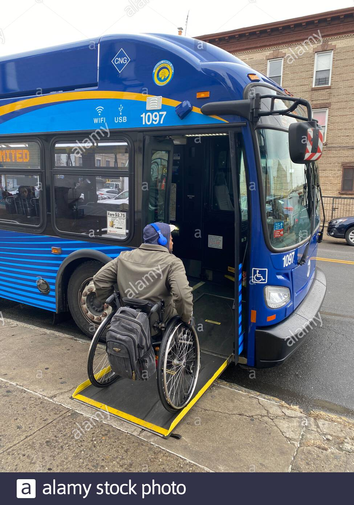
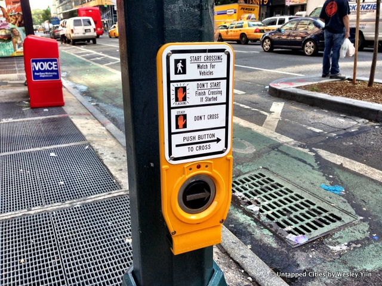
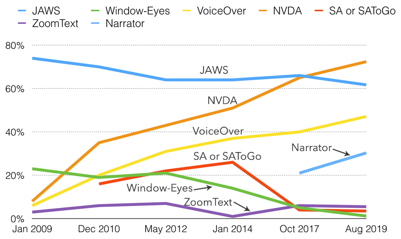
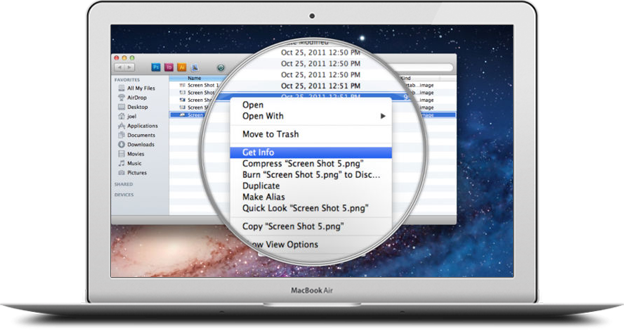
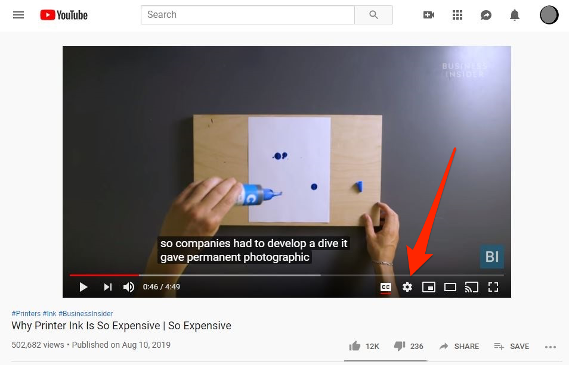
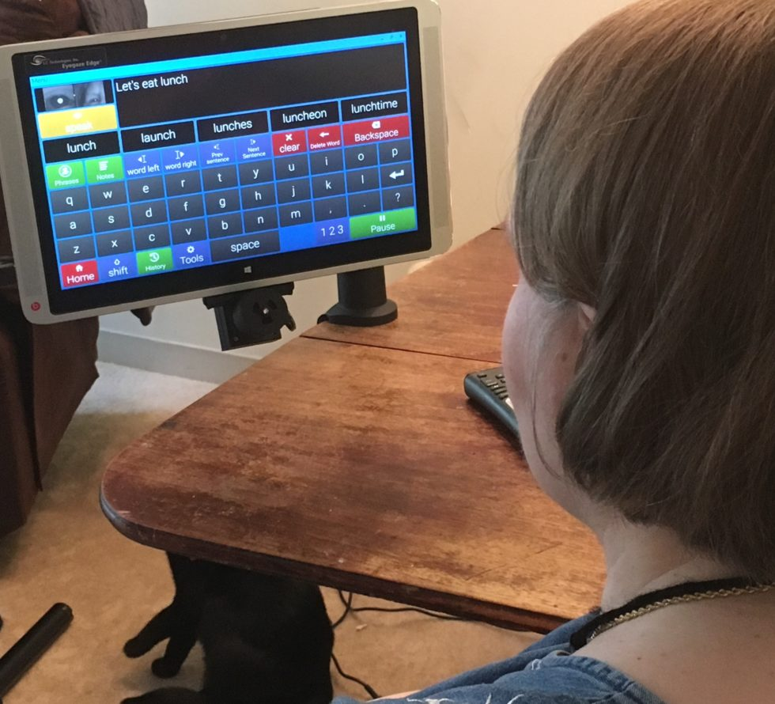
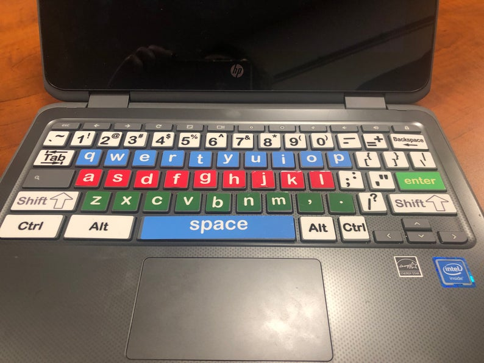
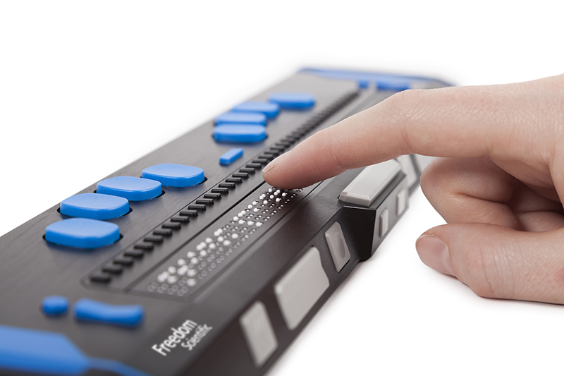
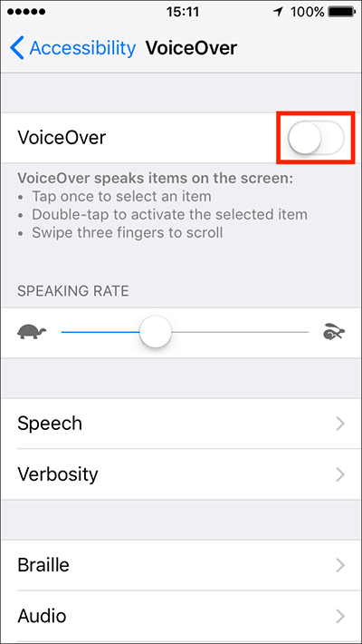
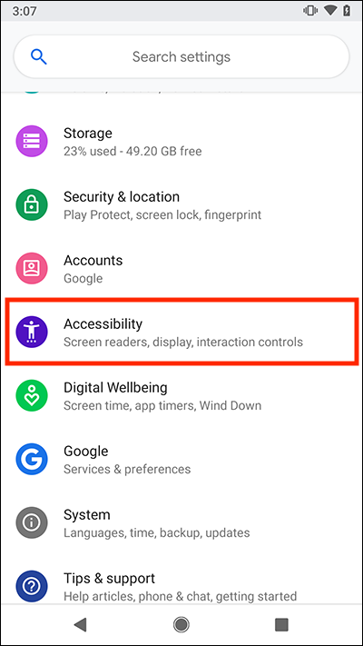

A measure of how simply a person can participate in an activity.
Subtitles & Closed Captions
Sign Language
Wheelchair Accessible Seating
Bus Ramps/Lifts
Braille ATM Keys
Pedestrian Signals
Screen Reader Software
Screen Magnifiers
Closed Captions
Eye Tracking Devices
Keyboard Overlays
Braille Displays
VoiceOver (iOS)
TalkBack (Android)
Braille Keyboards
Accessibility is the right thing to do. And not just the right thing; it’s profoundly the right thing to do, because the one argument for accessibility that doesn’t get made nearly often enough is how extraordinarily better it makes some people’s lives. How many opportunities do we have to dramatically improve people’s lives just by doing our job a little better?—Steve Krug